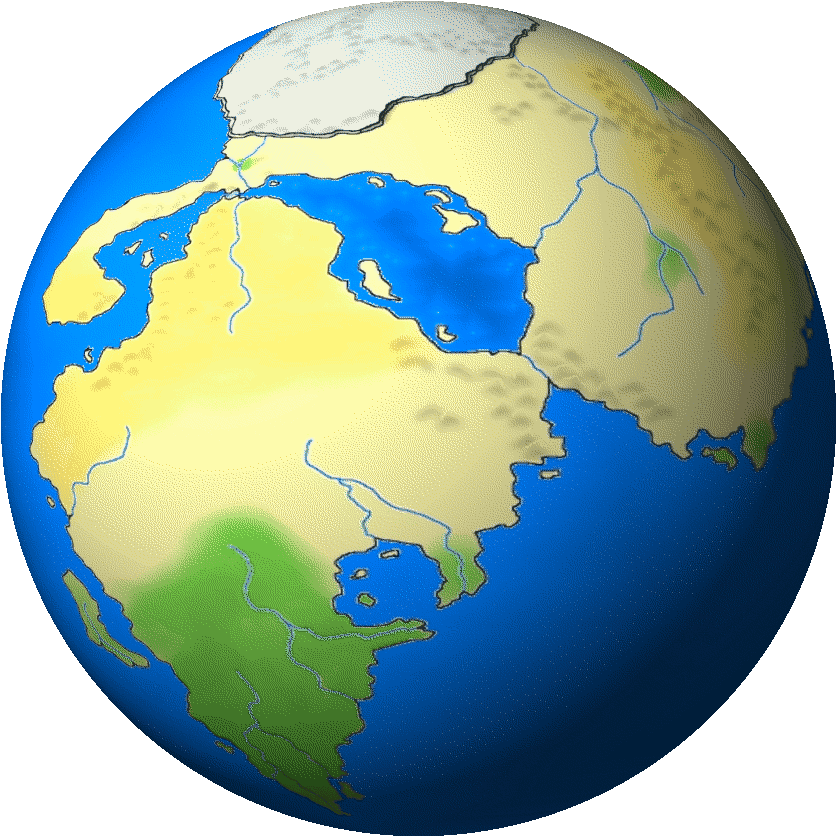

Rueda: zoom (aléjala para ver el globo) · Mayús + rueda: girar · Alt + rueda: inclinar · Rueda presionada (o clic derecho) + arrastrar: girar e inclinar.

Imág.
Topo
Calles
BÁSICO
AVANZADO
🥾 Trekking
⚪ DetenidoGPS —
0 mDistancia
0:00:00Tiempo total
0:00:00En movimiento
—Velocidad
+0 mDesnivel positivo
−0 mDesnivel negativo
—Altitud actual
—Ritmo
—Altitud máx.
—Altitud mín.
Perfil de altitud (azul: tu recorrido · rosado: ruta meta)
⚙ Ajustes
Importante: el navegador solo registra el GPS con la app abierta y la pantalla encendida; si la bloqueas o cambias de aplicación, la grabación se detiene. La altitud del GPS del celular tiene un error de 10–30 m: el desnivel es aproximado (se suaviza y se ignoran variaciones menores al umbral).
🧭 Mejor ruta entre A y B (según el relieve)
Marca A y B en el mapa.
Busca la ruta de menor esfuerzo sobre el modelo de elevación (~30 m), con la velocidad de caminata de Tobler. No conoce caminos reales salvo que elijas una capa de caminos; verifica la ruta en campo.
Al grabar, el geoportal te muestra cuánto falta, el rumbo a la meta, la hora estimada de llegada y te avisa (vibración y sonido) si te sales de la ruta o llegas a la meta. La ruta queda guardada en el teléfono.
Elige origen y destino (el origen puede ser tu ubicación) y obtén el tiempo de recorrido en auto, a pie y en bicicleta. Luego puedes seguir el recorrido con el GPS, también en vehículo.
El cálculo usa un servicio de rutas en línea (OpenStreetMap): requiere internet y no incluye tráfico. Si no hay señal se muestra una estimación en línea recta. Mientras sigues el recorrido, el geoportal avisa los giros, la distancia restante, la hora de llegada y recalcula si te sales de la ruta.
Descargar mapas para usar sin internet
Descarga la zona antes de salir, con buena señal. Los mapas que ya viste con internet también quedan guardados. Las capas de la base de datos, el clima y los procesos satelitales sí necesitan internet.
0:00:00tiempo
0 mdistancia
+0 mdesnivel
—altitud
Perfil
Pasa el dedo o el cursor sobre el perfil para ver la altitud y la pendiente.
Acerca el mapa o haz clic para ver el clima.
Leyenda
La conversión de coordenadas PSAD56 a WGS84 se aplica automáticamente al cargar archivos en Add Data.
En el panel Add Data, selecciona el Datum = PSAD56 → convertir a WGS84 antes de agregar el archivo. El sistema aplicará la transformación de Molodensky (ΔX=-279, ΔY=+175, ΔZ=-379) y mostrará la información de la conversión en el resultado.
Add Data
Puntos de referencia: escribe lo que marca tu GPS o usa tu ubicación. Se guardan en este equipo (sirven sin señal) y puedes bajarlos en Excel o KMZ.
A. Imagen georreferenciada (GeoTIFF, JPG o PNG)
B. Teselas XYZ (URL)
Imágenes cargadas
Capas añadidas
Ninguna capa agregada.
Consultas
Descargar resultados:
Descarga de Información Cruzada:
Distancia más corta a capas del portal
Puntos, líneas y polígonos se miden desde su borde hasta el borde más cercano de la capa evaluada.
Descargar resultados:
✏️ Dibujar en el mapa
Elige una herramienta para empezar a dibujar.
Elementos dibujados
Descargar:
📏 Regla
⛰ Perfil topográfico
Sistema de coordenadas del archivo
⛰ Perfil topográfico
🛰 Satélite y DEM
1 · Área de estudio
0%
Imagen
Parámetro
Estima el índice donde falta el dato óptico a partir de VV y VH, con un modelo ajustado en los píxeles que sí tienen dato. Es una estimación: se indica el % rellenado y el ajuste (R²).
Modelo digital de elevación
Extracción de altitud (solo puntos)
Ver en el mapa:
Descargar
Solo suaviza los bordes entre clases: el límite del área de estudio y los vacíos sin dato no se mueven, no quedan huecos ni solapes y las manchas menores a 4 píxeles no se tocan. El área de cada clase cambia levemente.
Descargar (GeoTIFF en UTM)
Curvas de nivel (shapefile de líneas)
📡 Teledetección
Índices espectrales
1. Vegetación
2. Clorofila
3. Agua
4. Humedad
5. Radar Sentinel-1 (sin nubes)
6. Quemas
7. Superficie
8. Nieve y hielo
9. Temperatura
Procesamiento avanzado
1. Clasificación de coberturas
Ecosistemas frágiles · Identificador preliminar
Ecosistemas frágiles
Con varias escenas se mide la persistencia (en qué fracción de fechas el píxel está húmedo o con agua). Para ver la estacionalidad usa un periodo de 12 meses.
Umbrales (versión 1)
Sirve para contrastar y, en la versión 2, para entrenar. No se asume que todos los bofedales estén inventariados: lo detectado fuera del inventario se reporta como «potencial nuevo».
Procesamiento avanzado
⭕ Buffer
✂️ Clip
🧩 Dissolve
⏱ Tiempo de recorrido
Si el shapefile no trae .prj (coordenadas UTM)
La velocidad se ajusta a la pendiente (función de Tobler) cuando el relieve está activo; sin relieve se usa ~5 km/h (a pie) o ~3,8 km/h (mula).
📋 Tabla de Información Cruzada0 registros
📖 Manual de uso del geoportal
Acceso al Geo Portal
Solo para correos autorizados por el administrador.
Administrar accesos
Agrega correos individuales (persona@empresa.com) o un dominio completo (@empresa.com). Con «Vence» el acceso es temporal.